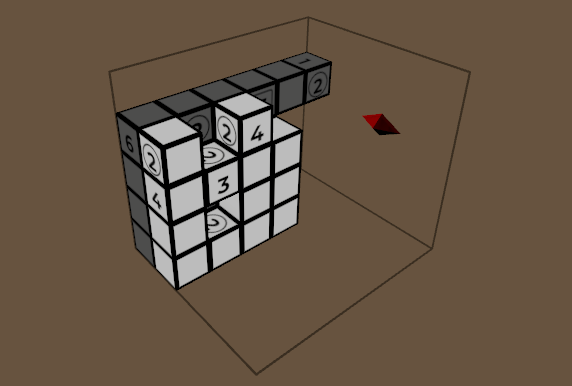

Picross 3D recreation
I developed a 3D Picross recreation with a custom level editor that allows players to create and share their own levels. Built in Unity, this project allowed me to explore my creativity while honing my programming skills. I utilized GPU instancing to optimize performance, rendering each face with custom property buffers to achieve fast and smooth gameplay, even with intricate designs and colorful structures.
The custom level editor was a significant aspect of the project, challenging me to create an intuitive interface that encourages players to unleash their creativity. Through this experience, I learned valuable lessons about user interface design and the importance of community engagement in gaming. Overall, this 3D Picross project was a rewarding journey that deepened my understanding of Unity and game development while allowing me to bring my vision to life independently.